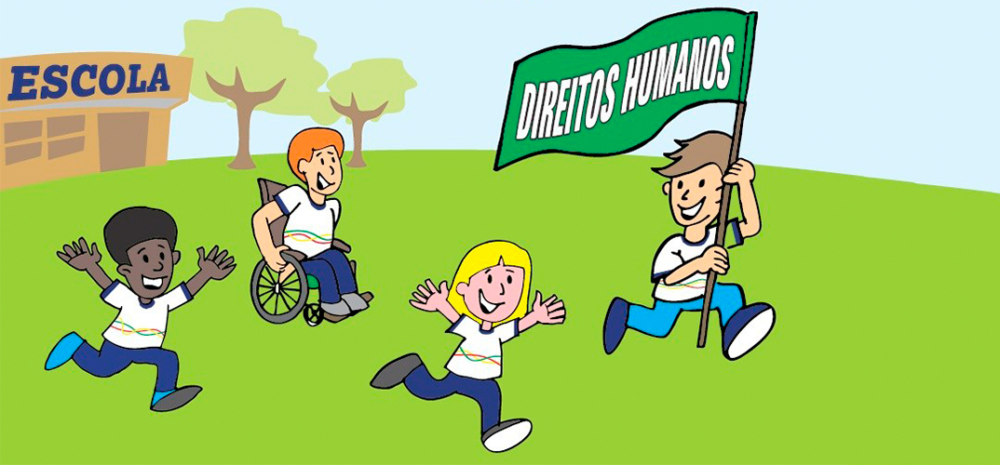

Os direitos humanos na escola são fundamentais para garantir um ambiente saudável, respeitoso e inclusivo para todos. Nesse sentido, a relação entre professores, alunos e demais profissionais da educação exerce um papel essencial na construção de um espaço baseado no diálogo e na empatia. Quando esses direitos não são respeitados, surgem conflitos que prejudicam tanto o aprendizado quanto o bem-estar dos envolvidos.
Em primeiro lugar, é importante destacar que os professores devem atuar não apenas como transmissores de conteúdo, mas também como mediadores de relações. Ao tratar os alunos com respeito e igualdade, eles contribuem para o desenvolvimento de valores como tolerância e responsabilidade. Da mesma forma, os estudantes precisam compreender seus deveres, respeitando os educadores e colegas, o que fortalece a convivência escolar.
Além disso, outros profissionais, como coordenadores, diretores e funcionários, também são responsáveis por garantir que os direitos humanos sejam praticados no cotidiano escolar. Eles devem intervir em situações de desrespeito, como casos de bullying ou discriminação, promovendo ações que incentivem a cultura de paz e o respeito às diferenças.
Portanto, para que os direitos humanos sejam efetivamente aplicados na escola, é necessário o comprometimento de todos os envolvidos. A partir do diálogo, da cooperação e do respeito mútuo, é possível construir um ambiente escolar mais justo e acolhedor, contribuindo não apenas para a formação acadêmica, mas também para a formação cidadã dos estudantes.